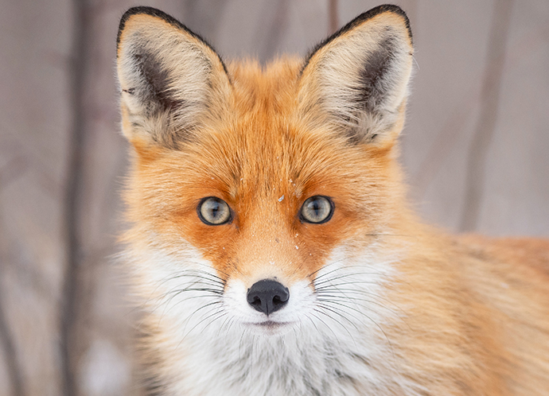

Руда (або звичайна) лисиця – найбільш розповсюджений та широко відомий вид роду лисиць. Вона також є найбільшим видом роду: довжина тіла 60-90 см, хвоста – 40-60 см, маса 6-11 кг. У більшості випадків забарвлення спини яскраво–руде, часто з неясним темним візерунком, черево біле, іноді чорне. Забарвлення у тварин з південних районів ареалу більш тьмяне. Поряд з типово забарвленими "вогнівками" зустрічаються особини з більш темним хутром: сиво-душки, хрестовки, чорно-бурі. Зрідка в природі зустрічаються альбіноси.
Звичайна лисиця розповсюджена вельми широко - в Європі по всій території, північній Африці (Єгипет та Алжир, Марокко, північний Туніс), більшій частині Азії (аж до північної Індії, південного Китаю та Індокитаю), в Північній Америці від арктичної зони до північного узбережжя Мексиканської затоки. В Австралії лисиця була акліматизована і розповсюдилась по всьому континенту, за винятком деяких північних районів з вологим субекваторіальним кліматом. В Україні руда лисиця зустрічається по всій території.
Лисиця, хоч і належить до типових хижаків, харчується дуже різноманітними кормами. Серед їжі, що вона вживає, виявлено більше 400 видів одних тільки тварин, не рахуючи кількох десятків видів рослин. Повсюдно основу її харчування складають дрібні гризуни, головним чином польовки. Можна сказати, що від їхнього достатку та досяжності в значній мірі залежить стан популяції цього хижака. Більш крупні ссавці, зокрема зайці, відіграють в харчуванні набагато меншу роль, хоча в деяких випадках лисиці їх цілеспрямовано ловлять, особливо зайчат, а під час заячого мору можуть поїдати трупи.
Початок